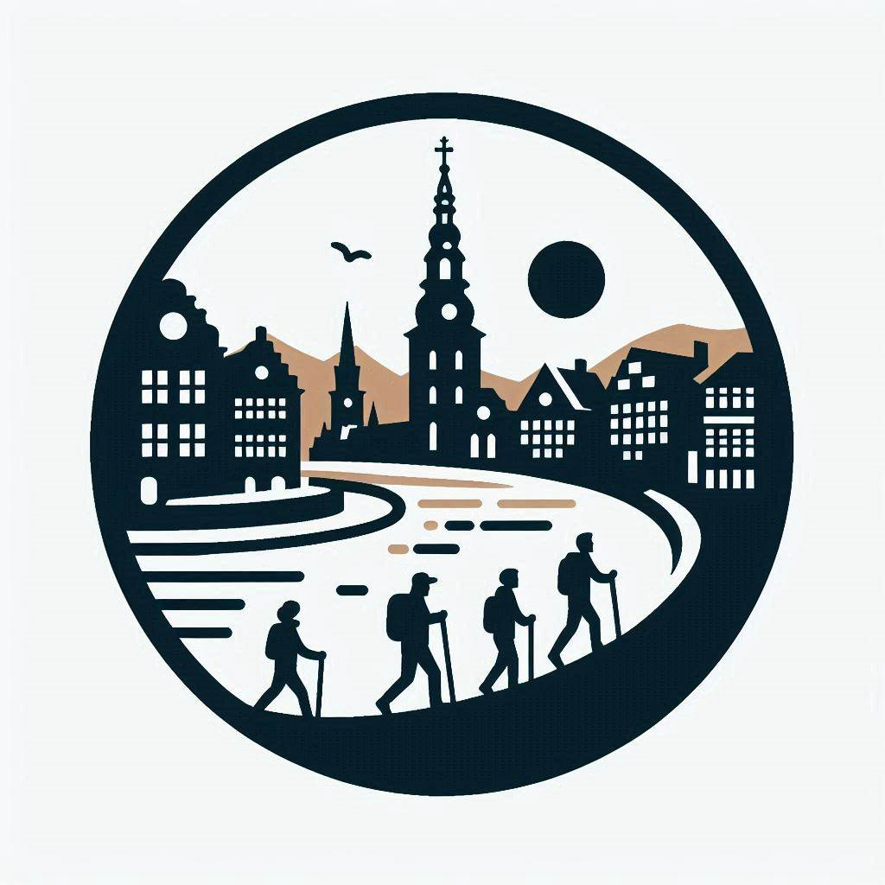

- Copenstory
- Kopenhagen Stadtrundgänge



Bei Copenstory bieten wir eine Reihe von spannenden und informativen Stadtrundgängen an, die das Beste von Kopenhagen zeigen. Unsere Dienstleistungen umfassen:
Hintergrund: Ingrid ist eine gebürtige Kopenhagenerin mit einer tiefen Leidenschaft für die reiche Geschichte und lebendige Kultur ihrer Stadt. Mit über 30 Jahren Erfahrung als Tourguide verfügt sie über umfangreiche Kenntnisse der Wahrzeichen Kopenhagens, versteckter Schätze und historischer Anekdoten. Ingrids warme Persönlichkeit und fesselnde Erzählweise machen ihre Touren sowohl informativ als auch unterhaltsam.
Fachgebiet: Ingrid ist auf historische und kulturelle Stadtrundgänge spezialisiert. Sie hat ein besonderes Interesse an der mittelalterlichen Geschichte Kopenhagens und teilt gerne Geschichten über die Entwicklung der Stadt im Laufe der Jahrhunderte. Ob es die architektonischen Wunder der Altstadt oder die charmanten Erzählungen der lokalen Folklore sind, Ingrid erweckt die Vergangenheit mit ihren fesselnden Erzählungen zum Leben.
Sprachen:
 Dänisch
Englisch
Dänisch
Englisch
 Italienisch
Französisch
Deutsch
Italienisch
Französisch
Deutsch
Hintergrund: Aisha, ursprünglich aus London, hat Kopenhagen in den letzten zehn Jahren zu ihrer Heimat gemacht. Mit einem reichen Hintergrund in Geschichte und einem Talent fürs Geschichtenerzählen führt Aisha seit über 10 Jahren Besucher durch die charmanten Straßen Kopenhagens. Ihr umfangreiches Wissen über die Wahrzeichen der Stadt, versteckte Schätze und historische Anekdoten, kombiniert mit ihrer warmen und einnehmenden Persönlichkeit, macht ihre Touren sowohl informativ als auch unterhaltsam.
Fachgebiet: Aisha ist auf zeitgenössische und historische Stadtrundgänge spezialisiert. Sie hat ein besonderes Interesse an der modernen Entwicklung Kopenhagens sowie an seiner reichen historischen Vergangenheit. Von der innovativen Architektur der neuen Hafenbereiche bis hin zu den fesselnden Geschichten über die Wikinger-Ursprünge der Stadt bringt Aisha eine einzigartige und aufschlussreiche Perspektive in jede Tour ein. Ihre Fähigkeit, nahtlos das Alte mit dem Neuen zu verbinden, stellt sicher, dass jeder Besucher ein umfassendes Verständnis der Entwicklung Kopenhagens erhält.
Sprachen:
Englisch
Dänisch
Französisch